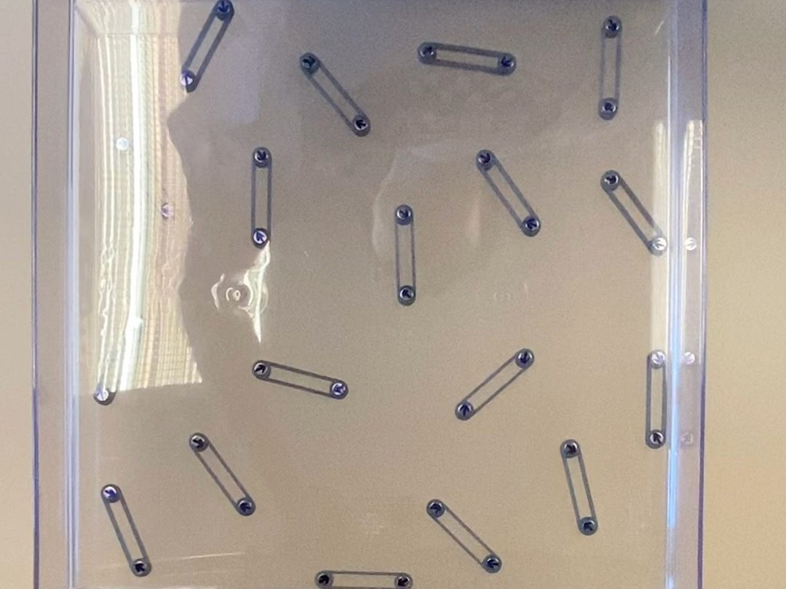

Sun Research Group · Jul 2022 – Aug 2022
Magnetic Self-Assembly Model
A magnetic, linkage-based model to physically simulate self-assembling networks, built in partnership with the Keten Research Group at Northwestern.

Overview
The goal of this project was to design a physical simulation of self-healing network configurations to validate results from earlier digital simulations written in Python. The project was completed for a PhD student from the Keten Research Group, who consulted with the Sun lab for help using 3D printing to fabricate the linkages. I designed, fabricated, and tested the magnetic linkages, and incorporated feedback from the client into the final design.
The aligner
The model used diametrically magnetized magnets with their dipoles oriented at prescribed angles. The biggest challenge was figuring out how to precisely orient a magnet's dipole and lock that orientation while inserting it into the linkage. I developed many prototypes for this and ultimately settled on a two-piece aligner: the magnet first attaches to a freely rotating lid, which then presses together with a base containing the linkage body. The pressing action also embeds the magnet within the linkage, resulting in an interference fit. The rotating lid allowed the dipole to be oriented in 30-degree increments, and guide holes made sure the alignment was precise. Magnets embedded in the lid both held the magnet in place and aligned its dipole. I printed the aligner prototypes on a Makerbot Method X in ABS.
The linkage
The linkage itself wasn't complicated. Initially I had a tapered middle rod connecting the magnetic ends to minimize interference from it, but this caused the linkages to form unwanted close-packed configurations. I also used an interference fit to hold the magnets in place, since glue would have been messy, and I already had experience with fits from the sample racks. The final linkage had a simple, straightforward design with flat walls and an empty center cavity. All of the linkages were printed in Grey Pro resin on a Formlabs Form 3B.